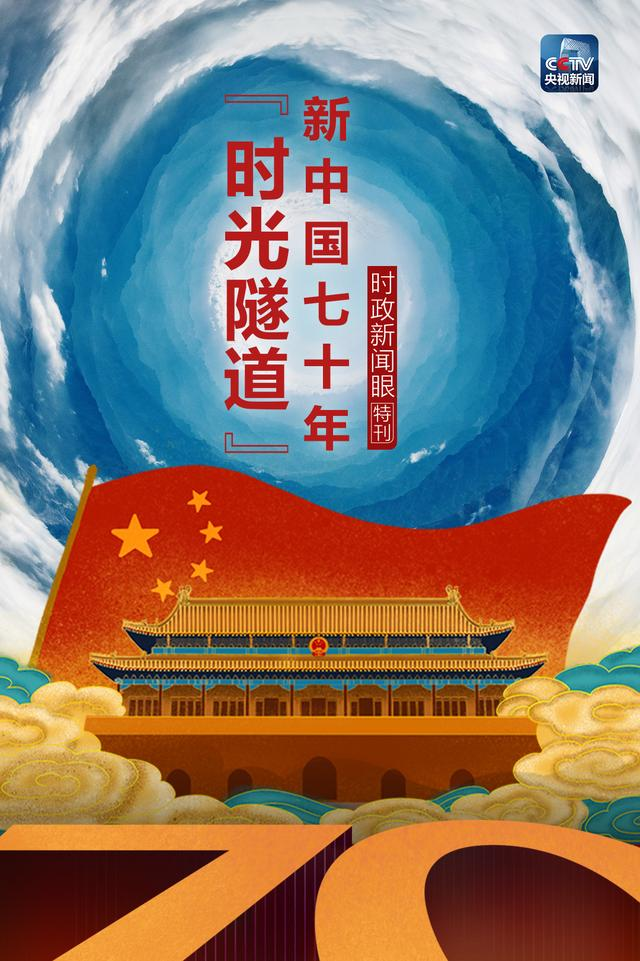
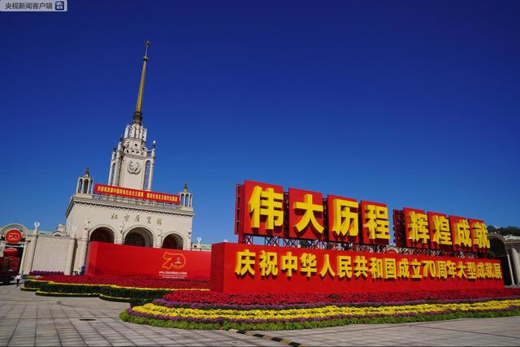
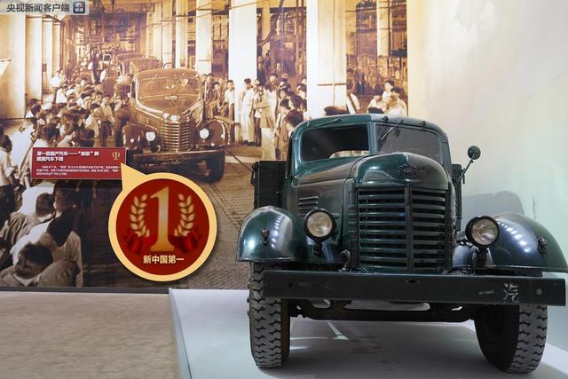

时政新闻眼丨习近平参观的这条新中国70年“时光隧道”，邀你先睹为快
央视新闻 2019-09-24 09:11:25

庆祝新中国成立70周年的盛典即将举行。9月23日，习近平来到北京展览馆，参观了一个名为“伟大历程
辉煌成就”的大型成就展。《时政新闻眼》也跟着去看了，走进这个展览长廊，就宛如走进了一条时光隧道。这个展览9月24日起向公众开放。接下来就先睹为快吧。
△习近平参观“伟大历程 辉煌成就——庆祝中华人民共和国成立70周年大型成就展”。
这些“新中国第一”，你知道吗？

△展览在北京展览馆举行，主题是“开辟和发展中国特色社会主义道路、建设社会主义现代化国家”。2017年，党的十九大前夕，习近平总书记曾来到这里参观“砥砺奋进的五年”大型成就展。
展览的全名是“伟大历程
辉煌成就——庆祝中华人民共和国成立70周年大型成就展”。展览以编年体为时间主线，安排设计了序厅、屹立东方、改革开放、走向复兴、人间正道五个部分。其中“屹立东方”对应1949年至1978年，“改革开放”对应1978年至2012年，“走向复兴”对应2012年至2019年。
在这五个部分，共选择展出了150个“新中国第一”。所有这些“新中国第一”都有一个统一的标识方便观众辨认。

△1956年7月，“解放”牌CA10型载重汽车驶下生产线，这是中国第一批国产汽车。
△总书记参观这一天，正好是中国农民丰收节。展区一角是浓浓的丰收景象。
庆祝中华人民共和国成立70周年大型成就展9月23日已经正式开幕。一个个高光时刻，一个个历史瞬间，一个个再现场景，此外还有7面英模墙、60个关键指标、十几块橙红色主题展板……要感受这条“时光隧道”，您还得亲身体验。
根据公告，国庆节前将举办若干专场参观活动，届时展馆将临时封闭。具体开放时间为：9月24日和26日全天、27日上午、28日下午、29日下午对公众开放，10月1日将暂停展览一天，10月2日以后正常开展。另外，9月29日起，社会公众可以参观大型成就展网上展馆